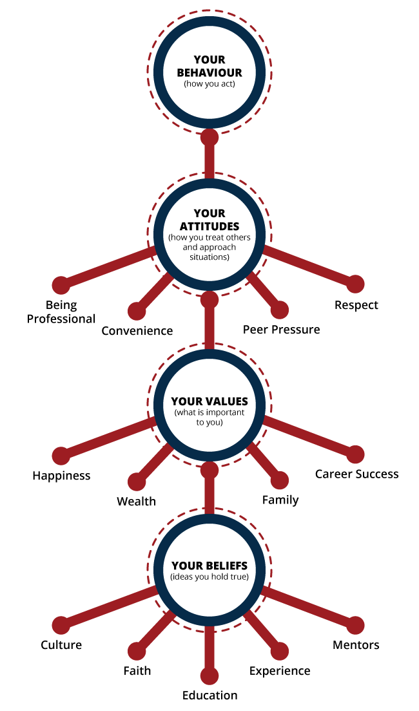

Introduction to Personal Ethics
In our personal and professional lives, we are constantly faced with decisions. When faced with some choices, our decisions are guided by the law; we try not to act illegally, and so our decisions will be guided by what is legal. At other times, our actions may be guided by our sense of right and wrong, even if the choice lies outside of the law. Each moment that we consider how we should act, or question what the “moral” or “correct” choice happens to be, we are confronting an ethical decision.
Personal Beliefs, Values, Attitudes and Behaviour
Ethics is a set of moral principles that guide behavior. How we act when faced with those decisions is dependent on our ethical principles. Our principles come from our attitudes, values, and beliefs.

Ethics vary from person to person depending on their own beliefs, values, and attitudes. Consequently, peoples’ actions can vary when faced with the same decision, especially if it is a difficult decision or "moral dilemma" – a situation in which the "right" choice is not immediately apparent. Generally, acting ethically is associated with being honest, fair, having integrity and treating others with respect. Ethical actions are associated with caring for others, demonstrating respect, complying with the law, and preventing harm (New Zealand Ethics Toolkit, 2013). Exactly what we consider ethical, and what principles guide our ethical actions, is considered a personal ethical code.
Supplementary Reading
Review the following sample personal codes of ethics:
Reference:
New Zealand Government Immigration Advisors Authority. (2013). Ethics Toolkit Retrieved July 15, 2015 from http://www.iaa.govt.nz/toolkits/ethics-toolkit.pdf .